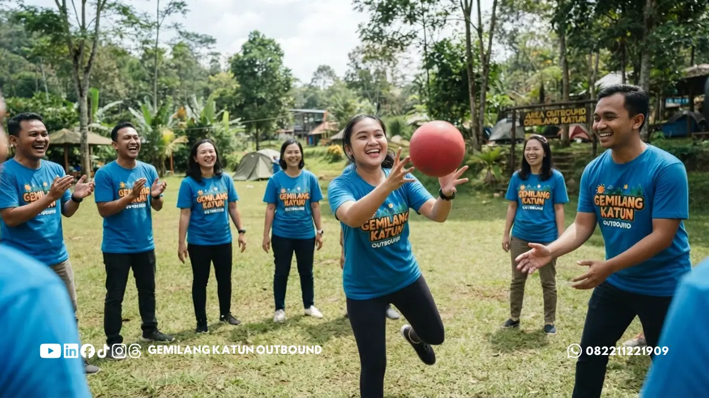

Daftar Isi
- Apa Itu Game Ice Breaking dalam Kegiatan Outbound?
- Mengapa Ice Breaking Penting Sebelum Masuk ke Games Outbound Lain?
- 20+ Contoh Game Ice Breaking Outbound yang Seru dan Mudah Dilakukan
- Bagaimana Cara Memilih Ice Breaking yang Sesuai dengan Karakter Peserta?
- Kapan Waktu Terbaik untuk Melakukan Ice Breaking dalam Acara Outbound?
Game ice breaking outbound adalah permainan ringan di awal acara yang bertujuan mencairkan suasana, mengurangi kecanggungan, dan membangun interaksi awal antaranggota tim.
- Ice breaking berfungsi sebagai pembuka sesi outbound sebelum masuk ke games yang lebih kompleks.
- Permainan ice breaking umumnya berdurasi singkat, sekitar 5-15 menit.
- Tersedia lebih dari 20 pilihan game ice breaking yang bisa disesuaikan dengan jumlah peserta.
- Ice breaking yang tepat dapat meningkatkan keterbukaan dan partisipasi aktif peserta sepanjang acara.
Apa Itu Game Ice Breaking dalam Kegiatan Outbound?
Game ice breaking dalam kegiatan outbound adalah permainan singkat dan ringan yang dilakukan di awal sesi untuk mencairkan suasana kaku dan membangun rasa nyaman antaranggota tim sebelum masuk ke aktivitas inti.
Berbeda dari games outbound lain yang biasanya melibatkan strategi atau fisik yang lebih menantang, ice breaking dirancang sederhana dan mudah diikuti oleh semua kalangan usia dan latar belakang.
Tujuannya bukan untuk menguji kemampuan, melainkan membangun suasana rileks agar peserta lebih terbuka berinteraksi sepanjang acara berlangsung.
Fungsi ice breaking ini penting terutama pada acara gathering yang melibatkan peserta lintas divisi atau lintas instansi yang belum terlalu saling mengenal.
Tanpa sesi pembuka yang tepat, suasana kaku di awal acara berpotensi terbawa hingga sesi-sesi berikutnya, sehingga games yang lebih berat pun menjadi kurang maksimal hasilnya.
Mengapa Ice Breaking Penting Sebelum Masuk ke Games Outbound Lain?
Ice breaking penting dilakukan di awal acara karena berfungsi sebagai jembatan psikologis yang membuat peserta lebih siap secara mental untuk berpartisipasi aktif dalam games outbound yang lebih menantang.
Ketika peserta merasa nyaman dan tidak canggung sejak awal, tingkat partisipasi pada sesi-sesi berikutnya cenderung lebih tinggi.
Sebaliknya, jika peserta langsung dihadapkan pada games yang membutuhkan kepercayaan tinggi seperti trust fall tanpa pemanasan sosial terlebih dahulu, hasil yang didapat sering kali kurang maksimal karena peserta belum merasa cukup dekat satu sama lain.
Selain itu, ice breaking juga membantu fasilitator membaca dinamika kelompok sejak dini, misalnya mengetahui siapa peserta yang lebih pendiam atau cenderung dominan, sehingga pembagian kelompok pada sesi berikutnya bisa disesuaikan agar lebih seimbang.

20+ Contoh Game Ice Breaking Outbound yang Seru dan Mudah Dilakukan
Berikut adalah lebih dari 20 contoh game ice breaking yang bisa langsung diterapkan pada berbagai jenis acara outbound, mulai dari gathering kantor hingga komunitas.
- Tebak Kata Berantai : kata dibisikkan secara berantai antarpeserta hingga ke ujung barisan, lalu dicocokkan hasil akhirnya.
- Lempar Bola Nama : peserta melempar bola sambil menyebut nama rekan penerima berikutnya.
- Dua Kebenaran Satu Kebohongan : setiap peserta membagikan tiga fakta tentang dirinya, satu di antaranya palsu.
- Human Knot : kelompok saling berpegangan tangan acak lalu berusaha mengurai simpul tanpa melepas pegangan.
- Cerita Berantai : peserta bergiliran menyambung satu kalimat cerita yang dimulai fasilitator.
- Tebak Suara Teman : peserta menutup mata dan menebak identitas rekan hanya dari suara.
- Siapa Aku : peserta menempelkan nama tokoh di punggung rekan dan menebaknya lewat pertanyaan ya/tidak.
- Bingo Perkenalan : peserta mencari rekan dengan kesamaan tertentu untuk mengisi kartu bingo sederhana.
- Angin Bertiup : peserta berpindah tempat duduk sesuai instruksi kategori yang disebutkan fasilitator.
- Tepuk Kompak : kelompok mengikuti pola tepuk tangan tertentu secara serentak tanpa kesalahan.
- Cermin Gerakan : peserta berpasangan meniru gerakan satu sama lain secara bergantian.
- Sambung Nama Hewan : setiap peserta menyebut nama hewan berbeda tanpa pengulangan secara bergiliran.
- Menara Nama : kelompok menyusun nama-nama anggotanya secara urut abjad tanpa berbicara.
- Tebak Ekspresi : peserta menebak emosi yang diperagakan rekan tanpa kata-kata.
- Sentuh Warna : fasilitator menyebut warna, peserta harus menyentuh benda dengan warna tersebut secepat mungkin.
- Rantai Angka : kelompok menghitung angka secara berurutan tanpa aba-aba, mengulang jika dua orang bicara bersamaan.
- Perkenalan Kata Sifat : setiap peserta memperkenalkan diri dengan kata sifat yang diawali huruf pertama namanya.
- Simon Says Versi Tim : peserta mengikuti instruksi hanya jika didahului kata "Simon berkata".
- Tebak Gambar Kelompok : satu peserta menggambar sesuatu di udara, kelompok menebak maksudnya.
- Lingkaran Cerita Objek : peserta membawa satu barang pribadi dan menceritakan singkat maknanya secara bergiliran.
- Estafet Senyum : senyuman "dioper" dari satu peserta ke peserta lain secara berurutan dalam lingkaran.
Untuk games ice breaking yang lebih menekankan kekompakan fisik ringan, Anda juga bisa menggabungkannya dengan contoh kegiatan pada artikel Contoh Kegiatan Outbound untuk Meningkatkan Kekompakan dan Kerja Sama Tim.
Bagaimana Cara Memilih Ice Breaking yang Sesuai dengan Karakter Peserta?
Cara memilih ice breaking yang tepat adalah dengan mempertimbangkan usia, latar belakang budaya, dan tingkat kenyamanan fisik peserta agar permainan terasa inklusif bagi semua orang.
Untuk kelompok karyawan kantor yang cenderung formal, ice breaking berbasis verbal seperti dua kebenaran satu kebohongan atau perkenalan kata sifat biasanya lebih diterima dibanding permainan fisik yang mengharuskan kontak tubuh berlebihan.
Sebaliknya, untuk kelompok komunitas hobi atau peserta yang sudah lebih akrab, permainan fisik ringan seperti human knot atau cermin gerakan bisa langsung diterapkan tanpa canggung berlebihan.
Menurut riset umum tentang dinamika kelompok kecil, interaksi awal yang positif dalam beberapa menit pertama pertemuan cenderung memengaruhi persepsi kenyamanan sosial sepanjang sisa waktu kegiatan berlangsung, sehingga pemilihan ice breaking yang sesuai karakter peserta menjadi langkah krusial di awal acara.
Kapan Waktu Terbaik untuk Melakukan Ice Breaking dalam Acara Outbound?
Waktu terbaik untuk melakukan ice breaking adalah di 15-20 menit pertama acara, segera setelah pembukaan resmi dan sebelum masuk ke sesi games inti yang lebih kompleks.
Melakukan ice breaking terlalu lama berisiko membuat peserta kehilangan energi sebelum masuk ke aktivitas utama, sementara melewatkan sesi ini sama sekali berpotensi membuat suasana tetap kaku sepanjang acara.
Idealnya, fasilitator memilih dua hingga tiga game ice breaking singkat yang bisa diselesaikan dalam waktu total sekitar 20-30 menit, cukup untuk mencairkan suasana tanpa menyita banyak waktu dari agenda inti.
Ice breaking adalah fondasi penting dalam setiap acara outbound karena membuka ruang interaksi yang lebih santai sebelum peserta masuk ke tantangan yang lebih besar. Dengan lebih dari 20 pilihan permainan yang bisa disesuaikan dengan karakter kelompok, sesi pembuka acara Anda bisa berjalan lebih hangat, seru, dan efektif membangun keterbukaan sejak menit pertama.
Konsultasikan Kebutuhan Ice Breaking Outbound Tim Anda Sekarang!
Booking & Tanya Paket via WhatsApp 0822-1122-1909